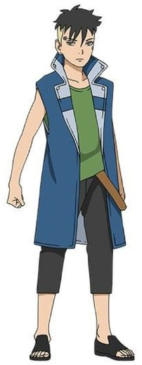

Boruto[a] is a Japanese manga series written by Ukyō Kodachi and Masashi Kishimoto, and illustrated by Mikio Ikemoto. It initially began monthly serialization under the title Boruto: Naruto Next Generations,[b] with Kodachi as writer and Kishimoto as editorial supervisor in Shueisha's shōnen manga magazine Weekly Shōnen Jump in May 2016, and was transferred to Shueisha's monthly magazine V Jump in July 2019. In November 2020, Kodachi stepped down, with Kishimoto taking over as writer. In April 2023, the series concluded the first part of the story and, following a brief hiatus, continued in August of the same year with a second part titled Boruto: Two Blue Vortex.[c] Boruto is a spin-off and a sequel to Kishimoto's Naruto and follows the exploits of Naruto Uzumaki's son, Boruto Uzumaki, and his ninja team.
